Our objective with the Friend Shaped Machine project was to create a robotic friend with a soft and fluffy exterior that follows people and hugs them with soft arms. Our resulting robot, Vivian, uses ArUco tag detection and PID control to follow people wearing tagged ankle bracelets, and provides hugs using motorized cable-driven plush arms.
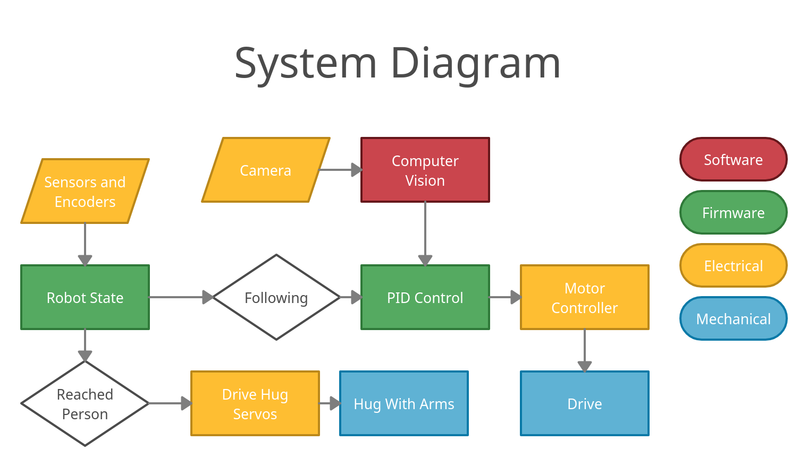
Our robot integrates software, firmware, electrical, and mechanical parts to create its behavior. To be able to follow a person, a Raspberry Pi running computer vision talks to the firmware to inform it of the person’s location. Based on the robot’s mode, the firmware reads different sensors and drives different motors to move the robot forward and power hugging action. Finally, the mechanical drive platform and soft robotic arms create the movement and gentle hugging action.
Mechanical
CAD
For this project, we used Fusion 360 for our CAD, because it allowed for easy CAD sharing between the team. Our chassis went through three distinct revisions. We initially started out using the chassis from the line-following robot, while we designed our own chassis. We knew we wanted the robot to be small, and so we opted for a basic circular design with an initial diameter of 24 cm. However, due to the size of our wheels and motors, we had to change to a circle with some protrusions in the back. To keep the mass centered, we put the battery in the back, to try to counter the mass of the arms at the front. We also created 3D printed brackets for the circuit boards and the cameras.
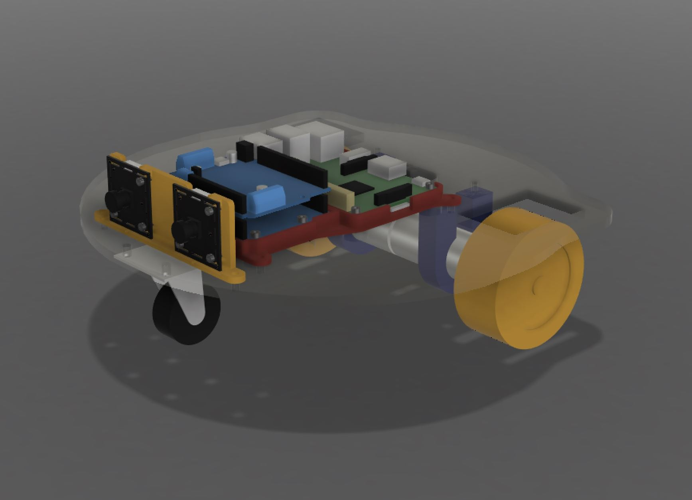
First custom chassis
However, when it came time to add the servos for the arms, we realized that our chassis was a bit too small. We decided that while we could probably compact things more by either stacking the electronics more, or by moving them, the easier solution was to just design the chassis to be slightly larger. So, we switched to a chassis with roughly the same shape, but with a 28 cm diameter. As you can see from the pictures below, the electronics got rotated 90 degrees and the motors got moved slightly farther apart. This made space for the arms.
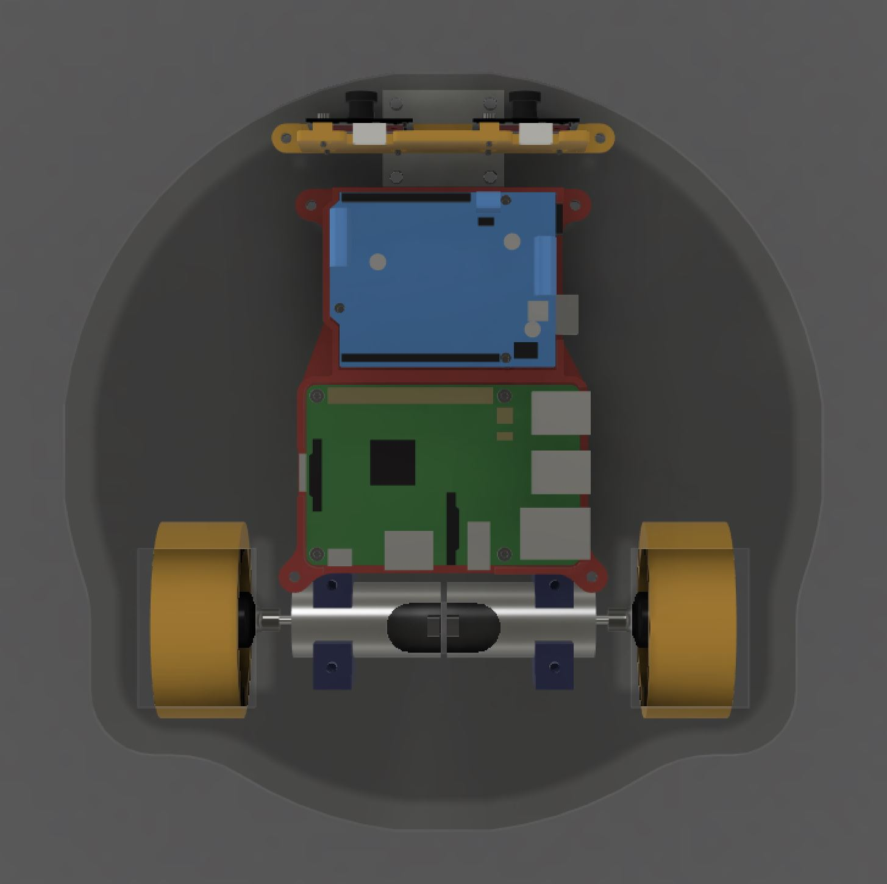
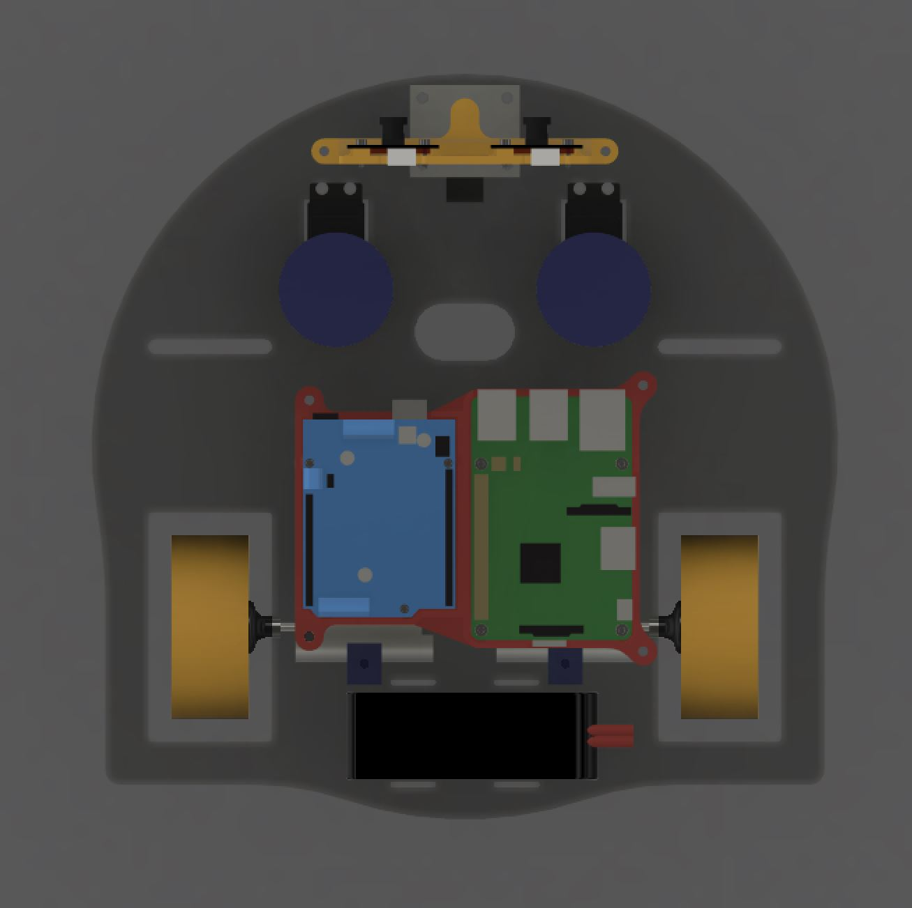
Vivian V2 vs. Vivian V3
Other changes in the second version were adding the battery (which is held on with velcro straps), the servos for the arms, and arm mounting slots. We also realized that we needed to make the camera taller so that they could see the leg mounted ArUco Tag, so we increased the camera bracket's height. We also added a depth sensor (which is not in the CAD, because we never made a CAD model of that one sensor). This can all be seen in the rendering below:
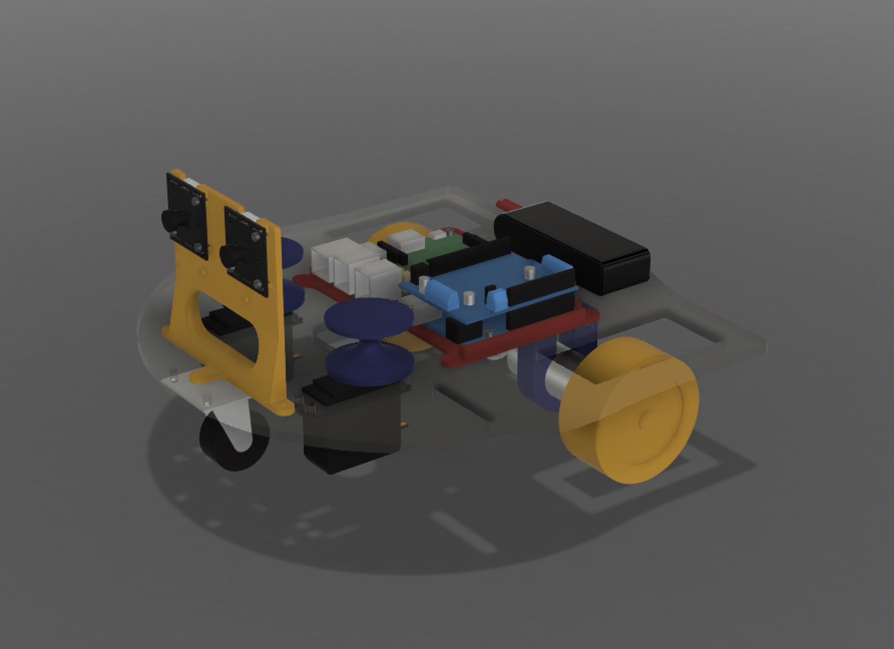
Arms
With our main goal being to hug, many ideas were discussed to accomplish this. First we thought of using pneumatic soft robotics, because it was an idea that many of us were excited by. After doing more research we found that the cost and the finicky nature of pneumatics made this not exactly in scope for our project and thought that a cable driven system is the likely better option.
Mechanical Arms
One option we debated early on was arms with a built-in skeleton that would be made of laser cut wood. We ultimately ended up abandoning them because they wouldn’t be as soft as the stuffed arms with cable run down the sides.
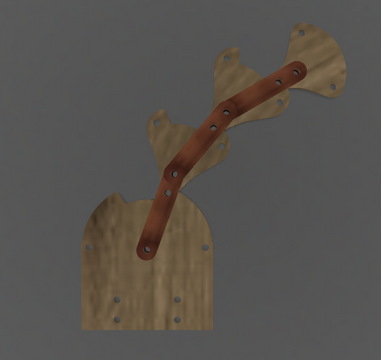
Soft Arms
After our Sprint 1 review it seemed that the mechanical arms no matter how organic the motion of the mechanical arms were they seemed a little imposing and didn't match the cuddly vibe we were going for. Based on suggestions from the teaching team, we took inspiration from Bern, Kumagai, and Coros' paper 'Fabrication, Modeling, and Control of Plush Robots' and made cable driven plush actuators. This takes our soft robotics goal from before but simplifies it. We designed and fabricated plush tentacles out of fleece and polyfill then sewed fishing line through in a basic running stitch pattern. By either sewing in a straight line or in different directions different motions can be created ranging from a simple in-out motion to a spiral up and in. These arms had the added bonus of being able to one use one servo and returning to straight natural as the bobbin unwinds. The arms were mounted to a slot with custom washers that compresse a larger area of the plush arms and firmly hold it in place. Grommets were added at different locations at the end of the arms to allow for the arm to be mounted at a variety of angles. Swapping out the spools and arms is also a very simple process allowing for customization and modularity of our little friend.
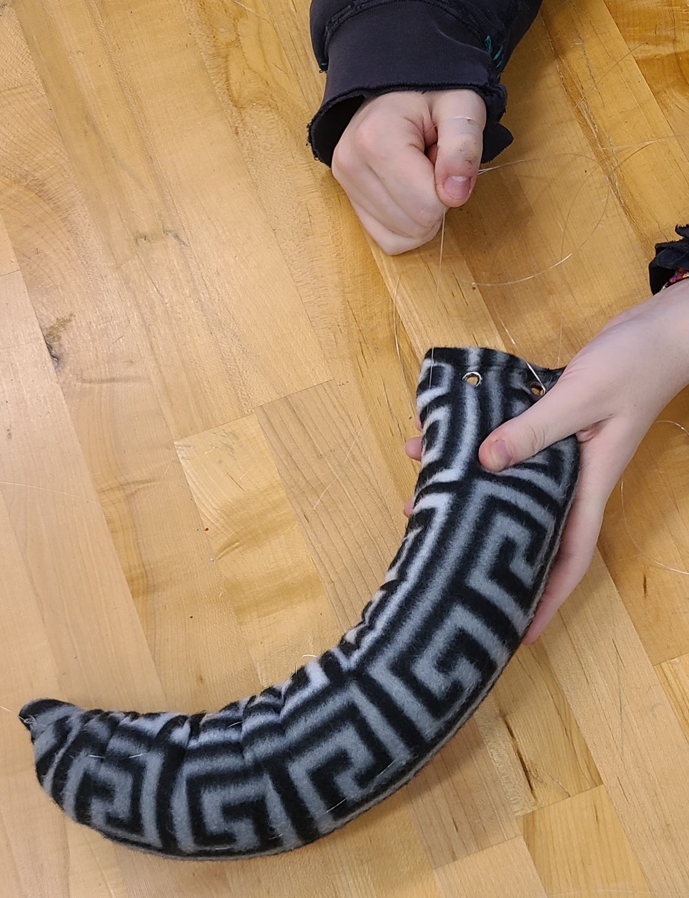
Exoskeleton
To protect our electronics, support our consent button, and make our bot more cute, we made a fluffy exoskeleton with velcro straps for easy access to the wiring underneath. A basic plastic bowl that was the same length as our bot was patterned with a faux fur cover with holes cut so as to not block our sensors.
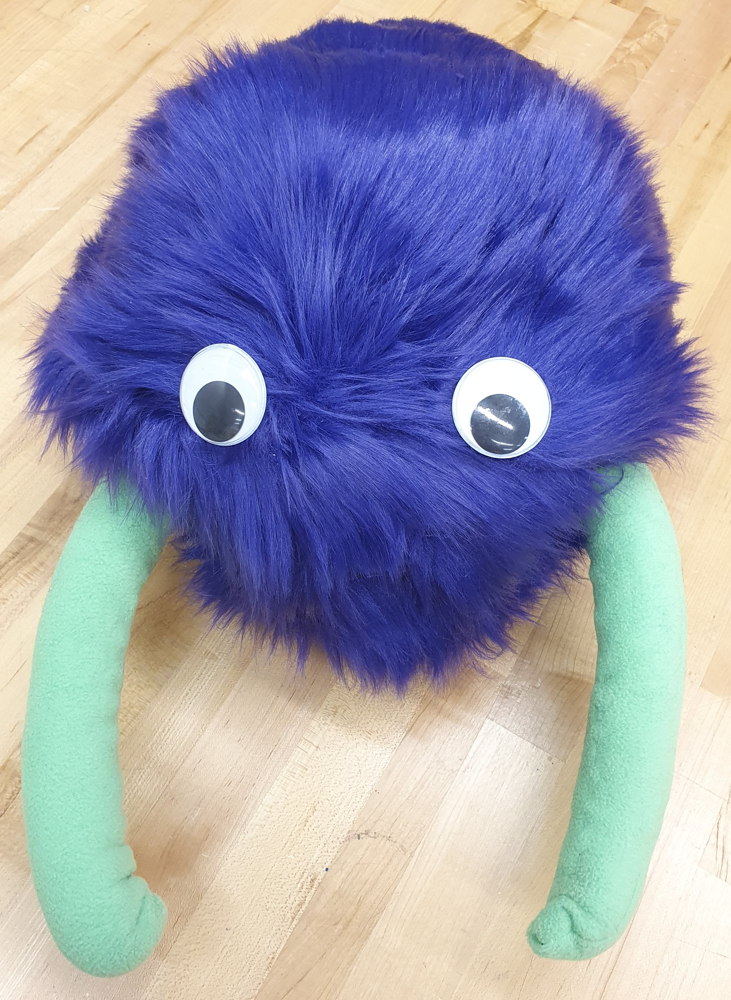
Electrical
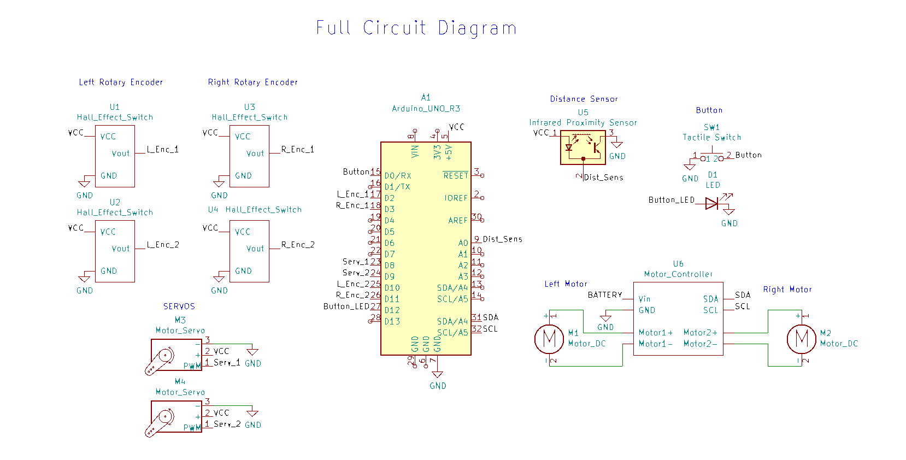
Our design incorporates multiple sensors and sets of motors to create the robotic platform.
We drive the robot using two DC brushless motors for differential drive. However, we cannot control them directly with the Arduino because they require too much power and require back voltage protection. Therefore, we use an Arduino motor shield which we can interface over I2C using an Adafruit library to control the motor power and direction.
Each of our motors has a rotary encoder which consists of two hall effect sensors and a rotating magnetic disc. The phase of the two hall effect sensor outputs are offset such that the value of B (see diagram) is positive on the rising edge of A when the motor is rotating clockwise, and negative when counterclockwise, meaning that we can detect both rotation amount and the direction. We connect one hall effect sensor on each motor to the hardware interrupt pins of our Arduino Uno, which allows the arduino to accurately count the number of rotations at fast speeds.
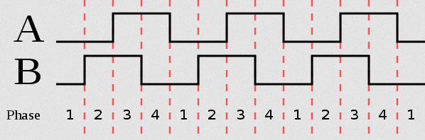
To sense whether the bot has reached its destination, we used an infrared distance sensor which acts as a voltage divider, increasing the voltage on the signal wire when an object gets closer.
We also used two 360 degree servos to power the arms. These are wired directly to the arduino for power and signal, and the servos are controlled using PWM with a servo library.
To power our robot, we used a 7.4V 2000mAh Lithium Polymer battery which can supply a maximum of 296 Watts. We measured our power consumption to be 10W for each of the two motors at maximum load, approximately 300 mW for the arduino and sensors, and about 5 Watts for each of the two servos. This comes to a potential maximum power draw of about 30 Watts which gives us plenty of overhead in our battery's power budget.
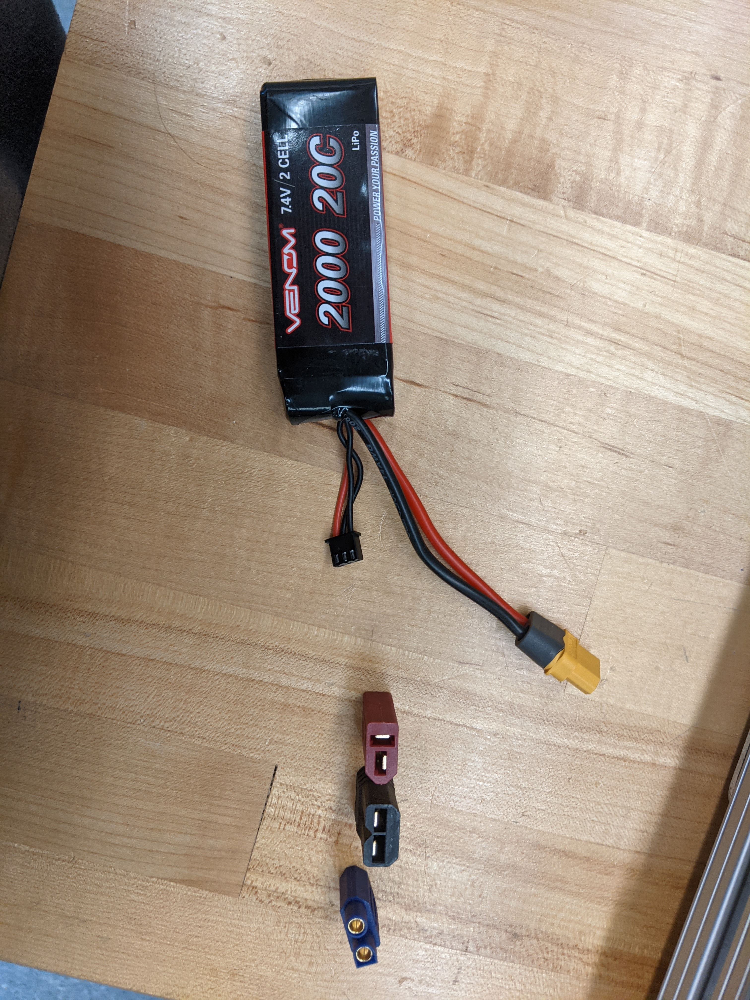
Firmware
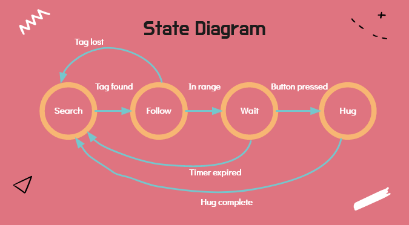
Searching
In “Searching” mode, the robot waits until it detects an ArUco tag coming into view, and then switches to “Follow” mode. The arduino determines this when an angle command is sent over serial from the Raspberry Pi computer vision code.
Follow
When the robot is in “Follow” mode, we use PID control to drive the robot to the person it is following. Using the rotary encoders, we calculate the current angle of the robot with differential drive mechanics. We determine the decoder values by counting how many times the encoder has rotated using hardware-interrupt-triggered functions which increment and decrement variables based on the direction the motor is going.
Once we receive an angle over Serial from the Raspberry Pi, we calculate a setpoint angle for the PID controller, in which the robot increases or decreases each motor speed to adjust its angle towards the person it is following.
If the robot is in “Follow” mode but an angle has not recently been received, the robot will switch back into “Searching” mode, as it has lost track of the tag.
If the robot is at the right distance from the tag (determined by the reading from the IR distance sensor), the robot switches into “ConsentWait” mode.
ConsentWait
In “ConsentWait” mode, the robot will sit still and wait until either the button is pressed or the 3-second timer has expired. Once the button is pressed, the robot switches into “Hug” mode, but if the timer expires, it switches back to “Searching” mode.
Hug
The “Hug” state writes commands to the servos to curl the arms in, hold them closed, then open them again and switch back to “Searching” mode.
Serial Communication
We created a serial parser based off of Brad Minch's Arduino serial code. Our serial parser first reads and stores all of the ascii text in the command buffer and then checks the first two characters for a command. It then looks in the remaining characters for numbers following the command, performing an operation based on the command. For example, sending “AG20” over serial to the arduino would result in the PID controller using twenty degrees as a new setpoint - this is the way that the computer vision code running on the Raspberry Pi communicates with the firmware.
Firmware Dependencies:
Adafruit_Motorshield.h: The motor controller library
Servo.h: A servo library
Software
ArUco Tag Detection
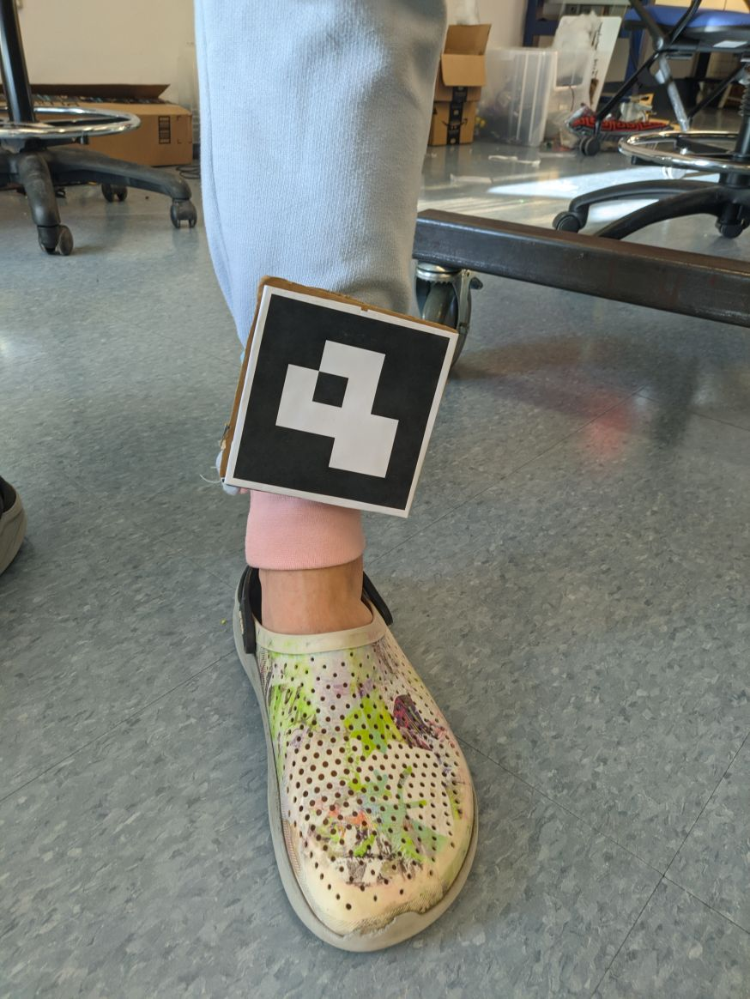
To determine where a person is, we use OpenCV to detect an ArUco tag strapped to the person. For this, we used the ArUco library which allows us to determine the pixel position on the video stream. We can then use trigonometry to determine the angle of the person relative to the camera:
We run the Computer Vision code on a Raspberry Pi 3 B+, which allows us to run the robot untethered. However, the performance limitations of this Single Board Computer make fast, real time computer vision difficult. Initially our plan for person detection was using a pre-trained neural network called YOLO-v3. However, this was extremely slow to run on even a full laptop, so instead we pivoted to ArUco tags.
We further made performance enhancements by using the multithreading video library ImUtils, which allows the video stream to run in parallel to the detection, resulting in faster detection and lower latency. Our final performance enhancement was to convert the video to grayscale because ArUco tag detection does not depend on color channels, so less processing is required if the video only has one channel.
To interface with the firmware running on the arduino, we created a helper serial class based off of Brad Minch's python serial code to be able to easily send angle commands over serial.
Software Dependencies:
OpenCV (Specifically opencv-contrib-python)
Numpy
Scipy
ImUtils
PySerial
Design Process
Our project shifted and began to take form over the course of the three design sprints.
Sprint 1
Our goal was to simply get a robotic platform up and running while working on designs for arms, drive platform, and computer vision. Therefore, we used an existing differential drive platform for the bot and simultaneously developed mechanical arms and Computer Vision code. At this point in time we had stretch goals of using inflatable soft robotics and stereo-vision terrain mapping.
Sprint 2
Our goal was to create our own working drive platform while refining the arms and computer vision. We created a new drive platform and mounted motors with rotary encoders for the bot’s movement. We iterated on arm design to create both rigid and soft arms, experimenting with materials and ways to make the arms curl. On software, we began using the Raspberry Pi to run the computer vision directly on the bot.
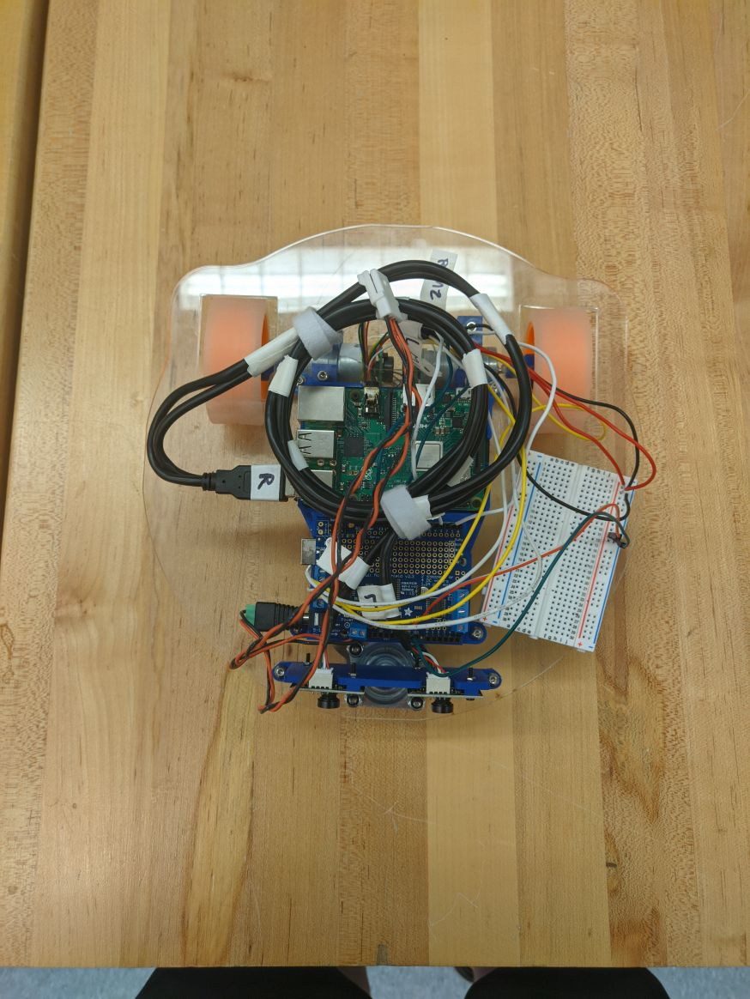
Sprint 3
Our goal was to have a fully integrated bot with arms mounted and person-following working. We made the drive platform larger to accommodate the arms while fixing bugs in firmware. We converged on plush arms because they return to their original shape and interact friendlier with humans. We finally got person-following working using ArUco tags, and developed behavior modes for the bot.
Budget
Item
Quantity
Price per unit
Total Price
720p USB Camera Module with 120degree Lens
2
$31.99
$63.98
360 Degree Continuous Servos (2 pcs)
2
$14.97
$29.94
Geared DC Motor with Encoder
2
$13.50
$27.00
2000mAh 7.4V LiPo Battery
1
$21.99
$21.99
Arcade LED Lights Push Button (5 pcs)
1
$11.99
$11.99
0.45mm Fishing Line - 656ft spool
1
$7.59
$7.59
Orange and Clear TT Motor Wheel for TT DC Gearbox Motor
2
$1.50
$3.00
Supporting Swivel Caster Wheel - 1.3" Diameter
1
$1.95
$1.95
Plastic Bowl
1
$1.00
$1.00
Total
$168.44
We also sourced a few materials for the project from around campus or members of our team, so we did not need to purchase them. Below is a rough estimate of what these items would have cost.
Raspberry Pi 3B+
1
$35.00
Arduino Uno
1
$22.76
Arduino Motor Shield
1
$19.95
Sharp IR Sensor
1
$14.95
Clear Acrylic
12"x24"
$10.97
Fleece and Faux Fur
12"x24"
$9.00
PLA
0.125 kg
$4.00
Total
$116.63
About Us
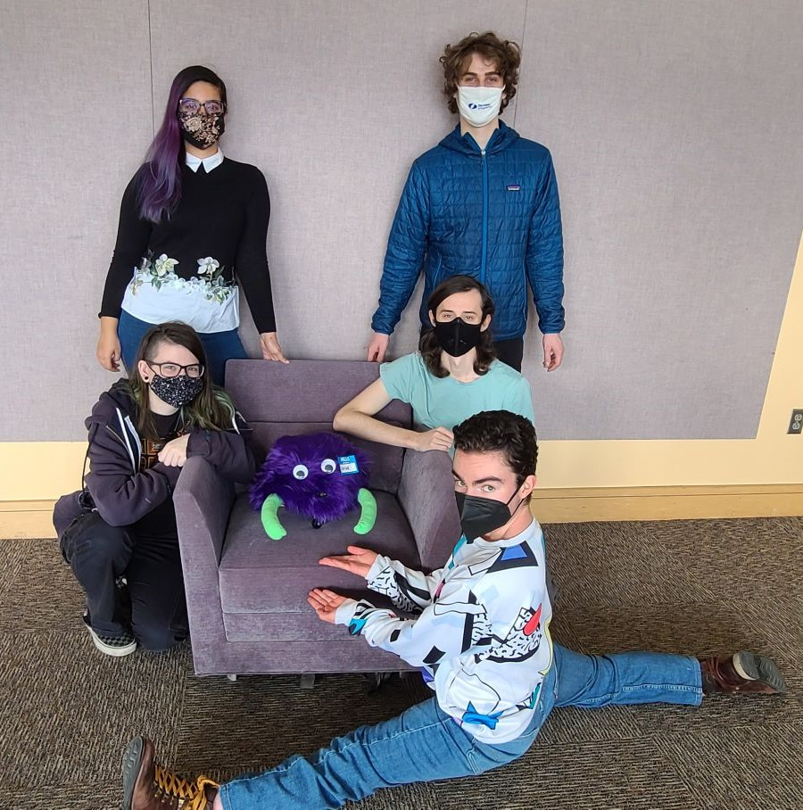
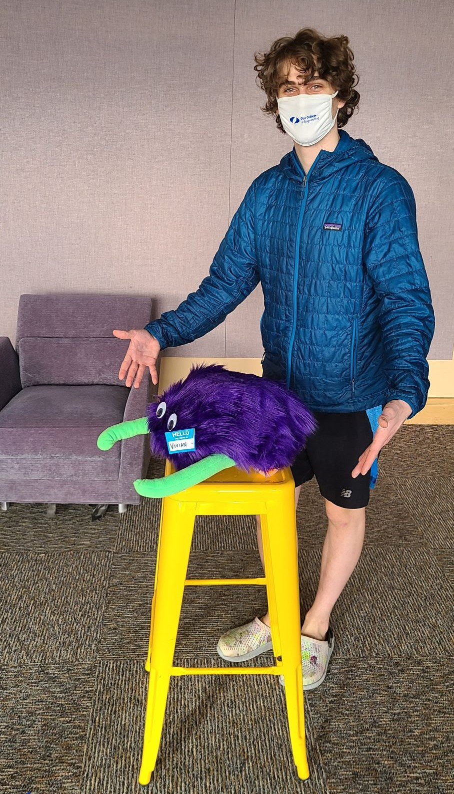
Benji: Electrical and Computer Engineer, Class of 2024, likes jazz.
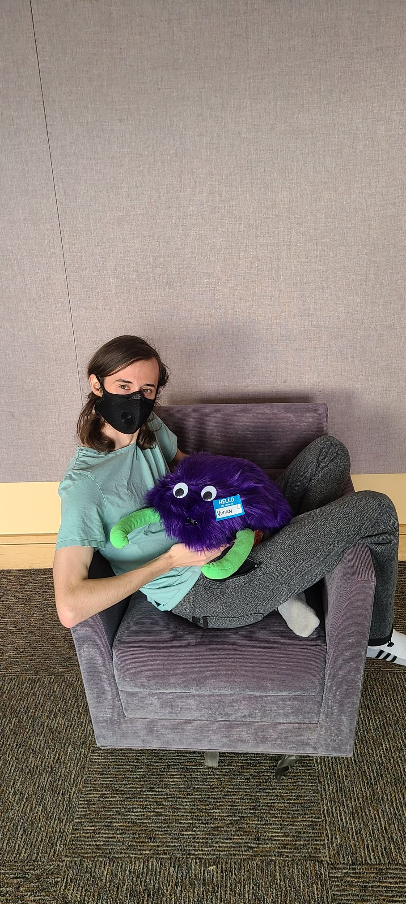
Chris S: Mechanical Engineer, Class of 2024, likes (sarcastic) sentient robots.
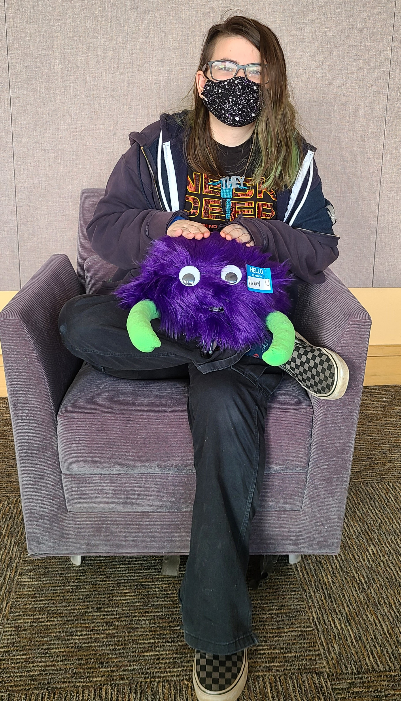
Chris B: Mechanical Engineer, Class of 2024, likes soft things.
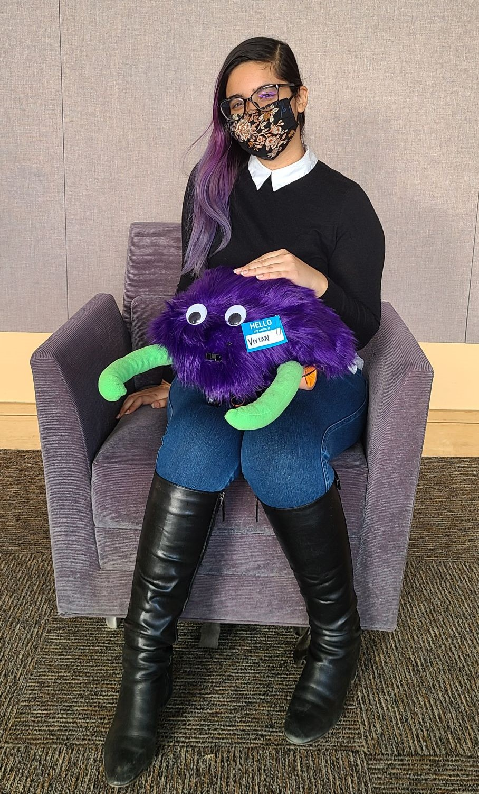
Maya: Robotics Engineer, Class of 2023, likes the color purple.
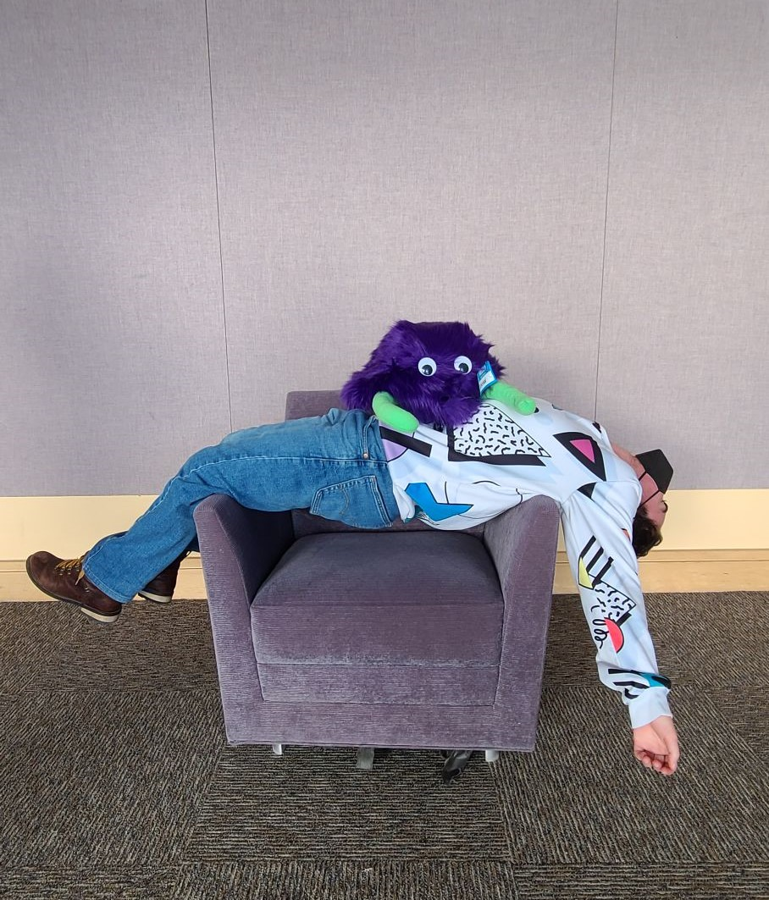
Clark: Software and Firmware Engineer, Class of 2023, likes textures and shapes. Has a dance mode.
Gallery
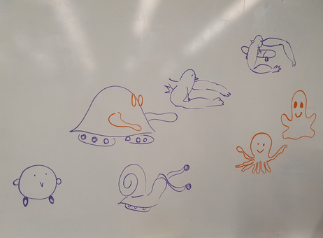
Initial ideas for the appearance (some more serious than others)
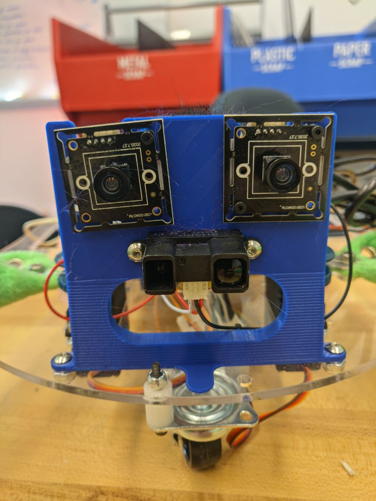
Mounted cameras and distance sensor
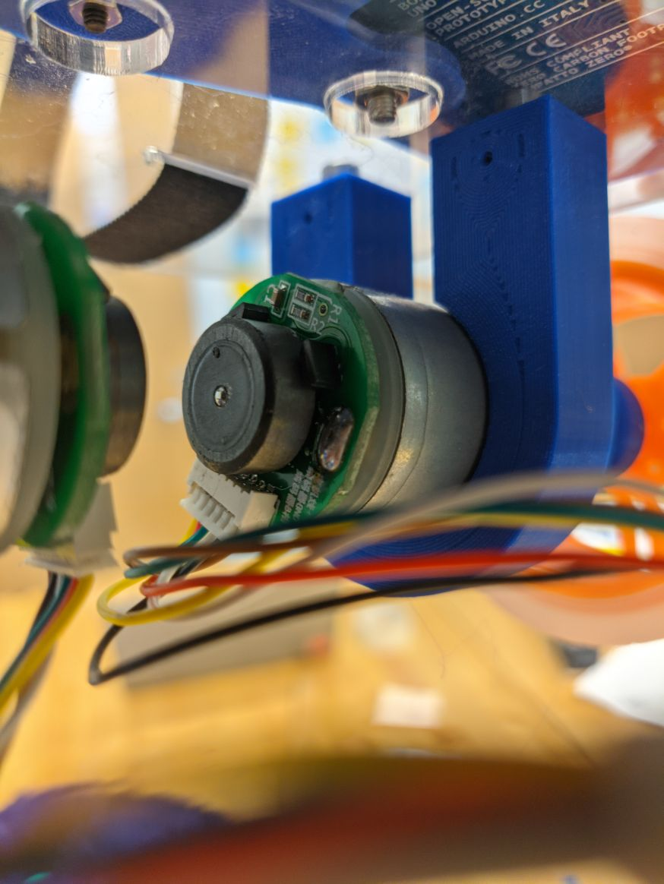
Rotary encoderVivian without exoskeleton